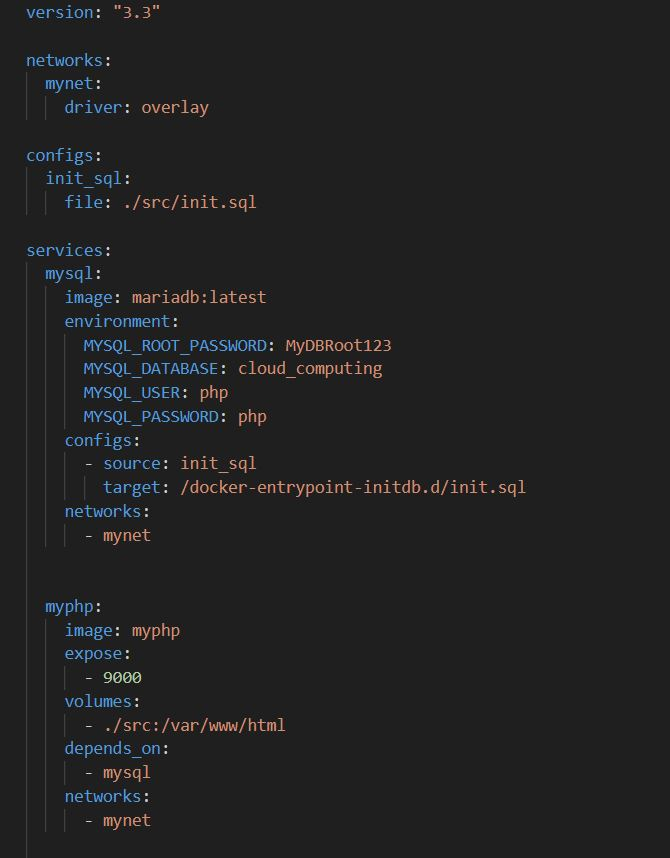

This project establishes a cloud-ready infrastructure for a web-based application using Docker. It includes multiple services such as a MariaDB database, a PHP application, an Nginx web server, and a PHPMyAdmin interface for database management. The setup leverages Docker Swarm to orchestrate a multi-container environment, ensuring scalability, resilience, and portability across cloud nodes.
The main objective was to create a flexible and portable application environment capable of scaling and providing high availability. With Docker's containerization, the project achieves a high level of efficiency in resource management and deployment flexibility.
This image showcases the Docker Compose configuration, which defines the services used in this project. It includes MariaDB for data storage, PHP for server-side logic, Nginx as the web server, and PHPMyAdmin for managing the database. Each service is connected via an overlay network, enabling seamless communication between containers.
This diagram illustrates the system architecture, where Nginx routes requests to PHP, which in turn interacts with the MariaDB database. PHPMyAdmin provides an interface for database management, directly connecting to MariaDB. This design supports scalability and modularization for a cloud-based setup.
This cost estimate reflects the monthly expenses for running the cloud infrastructure, which includes computing resources and storage. By using a cloud provider, this setup benefits from scalability and cost-effectiveness, with an estimated monthly expense of $75.63 based on usage.